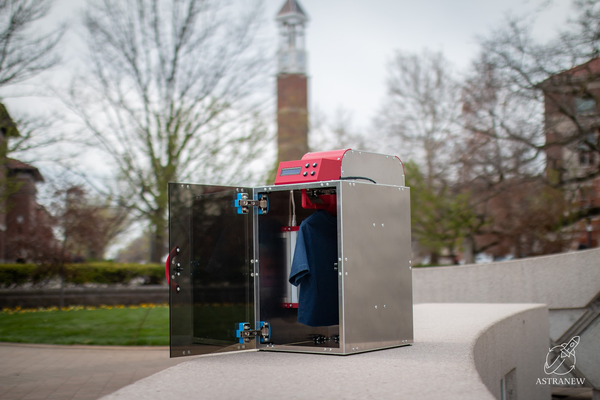

Astranew: Waterless Clothing Sanitation System for Space Missions
Patent Pending
Astranew is a novel, waterless clothing sanitation system designed to solve the critical challenge of textile waste in long-duration space missions. Conventional laundry is impossible in microgravity, forcing astronauts to discard hundreds of pounds of clothing per mission—wasting both mass and resources at staggering cost. Astranew addresses this by enabling safe, closed-loop garment reuse through advanced UV-C sterilization and high-efficiency airflow, all within a compact, spacecraft-compatible enclosure. The system achieves over 99.9% bacterial reduction in less than five minutes, with complete sterilization and deodorization cycles completed in under twenty minutes—dramatically exceeding NASA's requirements while using no water, chemicals, or consumables.
Beyond its technical achievements, Astranew was engineered for real-world spacecraft integration: a robust aluminum chassis, custom 3D-printed airflow hangers, replaceable deodorizing cartridges, and a user-friendly Arduino-powered interface all contribute to a reliable, crew-friendly system. The project's development involved extensive computational fluid dynamics (CFD) analysis, mechanical design for manufacturability, and iterative prototyping and validation—including biological testing and ergonomic user interface development. The prototype not only demonstrated exceptional technical performance but also showed direct commercial viability, with projected launch cost savings of up to $4 million per astronaut and strong demand from both governmental and private space sectors.
Astranew's innovative approach and tangible impact were recognized at Purdue University's 2025 Senior Design Expo, where the project was awarded the Sustainability Innovation Award for its contribution to resource-efficient, environmentally conscious engineering. The system sets a new benchmark for sustainable human presence in space, with clear applications for remote or resource-constrained environments on Earth as well.
Key Features:
- Waterless UV-C Sterilization: Utilizes germicidal UV-C lamps to achieve ≥99.9% microbial reduction, eliminating the need for water or chemicals.
- Closed-Loop Airflow System: Dual high-output fans and custom 3D-printed hangers ensure uniform air distribution through garments for rapid deodorization and sterilization.
- Rapid Sanitation Cycles: Completes full sterilization and deodorization in under 20 minutes, exceeding NASA's requirements for textile hygiene.
- Spacecraft-Ready Compact Design: Engineered to fit within standard NASA EXPRESS Rack double lockers, with robust 5052-aluminum construction and modular internal components.
- User-Friendly Interface: Arduino-based control system with LCD display and four intuitive buttons (Start/Pause, Emergency Stop, Cycle Time +/-), minimizing training requirements.
- Energy Efficient: Operates within a strict 300-watt power ceiling, using only 262.5W—compatible with spacecraft power constraints.
- Replaceable Deodorizing Cartridge: Sliding tray mechanism allows easy replacement of filters for ongoing odor removal and particle capture.
- Validated by Biological and Sensory Testing: Proven effective through Petri dish bacterial assays and multi-user odor panel evaluations, with rapid performance improvements verified.
- Modular & Serviceable Electronics Packaging: All electronics consolidated into shielded, serviceable enclosures for safe operation, easy maintenance, and rapid troubleshooting.
- Safety & Standards Compliance: Built to ASME Y14.5-2018, IPC-2221B, and preliminary NASA workmanship standards for structural, electrical, and outgassing requirements.
My Key Contributions:
- Electronics Lead: Designed and implemented the Arduino-based control system, including user interface, safety interlocks, and coordinated control of fans and UV-C lights.
- System Integration: Led the assembly and packaging of all electronics, ensuring clean, robust, and serviceable wiring and enclosures within the prototype.
- Mechanical Design: Assisted in CAD modeling and physical prototyping of the enclosure and custom 3D-printed components to ensure manufacturability and performance.
- Simulation & Analysis: Performed simulations to optimize power draw for efficient sterilization, and contributed to power/thermal analysis to validate safe and efficient operation.
Technologies Used:
Project Gallery